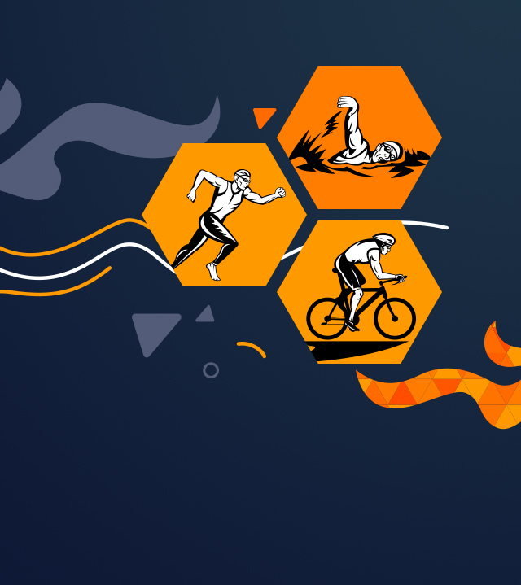
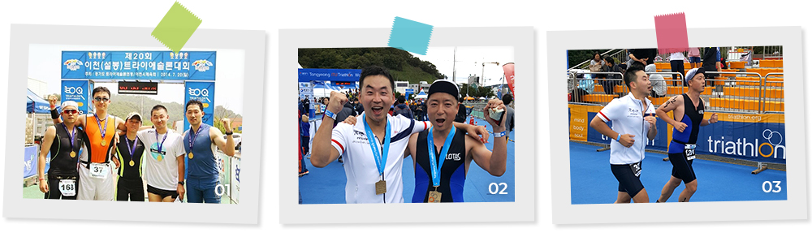
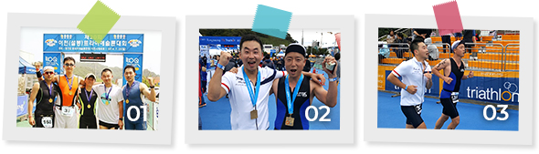
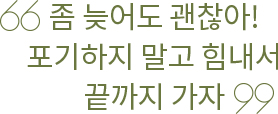
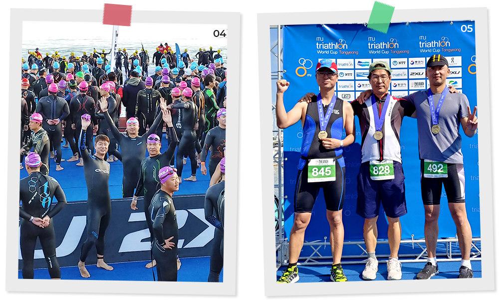
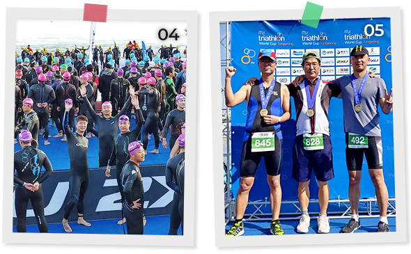
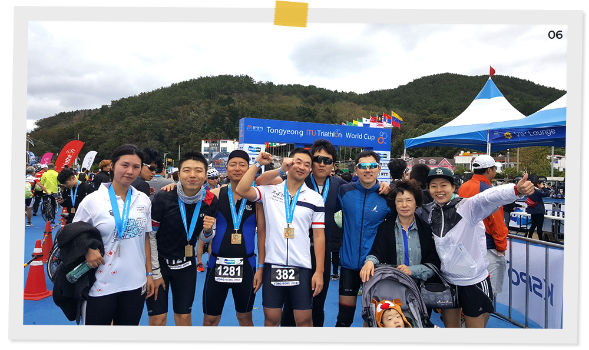
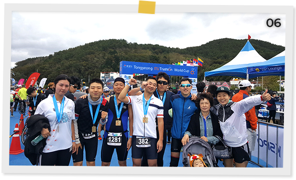

와 제 롤모델이 잡스에요!!! 아이폰 첫 출시되고 나서부터 계속 아이폰 쓰고 있는데 잡스가 너무 그리워요ㅠㅠ 지금은 돈만 벌려고 하는 것 같아서 디자인 발전도 없고ㅠㅠ와 제 롤모델이 잡스에요!!! 아이폰 첫 출시되고 나서부터 계속 아이폰 쓰고 있는데 잡스가 너무 그리워요ㅠㅠ 지금은 돈만 벌려고 하는 것 같아서 디자인 발전도 없고ㅠㅠ와 제 롤모델이 잡스에요!!! 아이폰 첫 출시되고 나서부터 계속 아이폰 쓰고 있는데 잡스가 너무 그리워요ㅠㅠ 지금은 돈만 벌려고 하는 것 같아서 디자인 발전도 없고ㅠㅠ와 제 롤모델이 잡스에요!!! 아이폰 첫 출시되고 나서부터 계속 아이폰 쓰고 있는데 잡스가 너무 그리워요ㅠㅠ 지금은 돈만 벌려고 하는 것 같아서 디자인 발전도 없고ㅠㅠ와 제 롤모델이 잡스에요!!! 아이폰 첫 출시되고 나서부터 계속 아이폰 쓰고 있는데 잡스가 너무 그리워요ㅠㅠ 지금은 돈만 벌려고 하는 것 같아서 디자인 발전도 없고ㅠㅠ
HMM 에세이
철인3종경기에 도전한 현상인
우리는 멈추지 않는다
한계에 도전한다
한계에 도전한다

2012년 늦은 겨울, 운동에 소질 없어 보이는 한 친구가 ‘철인3종경기’에 도전해보겠다며
함께할 사람들을 회사에서 수소문하기 시작했다. ‘불가능해 보이는데’, ‘하다가 죽는 거 아니야?’,
‘네가 정말 할 수 있겠어?’라는 우려 섞인 주변의 시선에도 불구하고 도전을 두려워하지 않았던
현대상선 6명의 친구는 스스로를 ‘강한 친구들’이라 부르며 무모해 보이는 도전을 함께 시작하게 됐다.
글·사진
우영수 과장(육상직원노동조합)
수영 1.5km(수영장 왕복 30회 거리), 자전거 40km, 달리기 10km로 구성된 ‘철인3종경기’는 대부분이 수영 1회 왕복조차 할 줄 모르던 ‘강한 친구들’에게는 무모하다 못해 불가능에 가까운 도전이었다. 하지만, 즐거운 도전에 나선 그들은 설레는 마음으로 매일 아침 수영 연습을 하고 주말엔 함께 자전거를 탔으며 도전에 나선 지 약 5개월 후인 2013년 5월 첫 도전인 경주 전국트라이애슬론 대회에서 단 한 명의 낙오자도 없이 모두 완주하게 된다.


012014년에 참가한 이천트라이애슬론대회에서 (왼쪽부터) 조은범 과장, 권승면 대리, 이정수 과장, 우영수 과장, 이현철 과장
02, 032016년에 참가한 통영ITU트라이애슬론 대회에서

그렇게 ‘강한 친구들’은 2018년 10월 28일 통영ITU트라이애슬론 대회까지 6년 동안 매년 빠짐없이 대회에 참가했고, 그 사이 대회에서 완주해낸 멤버는 릴레이팀을 포함해 11명으로 늘었다. 처음 이 도전을 시작한 ‘한 친구’에게 어떤 생각으로 이 무모한 도전을 시작했는지 물었다. 그 친구는 이렇게 답했다. “동료들에게, 친구들에게 평범한 우리가 함께 해냄으로써 용기를 주고 싶었다. 아무나 도전할 수 있고, 포기하지 않는다면 누구든 해낼 수 있다는 이야기를 해주고 싶었다. 그게 철인3종이든 다른 무엇이든”


042018 통영ITU트라이애슬론 대회에서
052018 통영ITU트라이애슬론 대회를 완주한 (왼쪽부터) 김진만 부장, 김성열 부장, 우영수 과장
지난 10월 28일에 있었던 통영ITU트라이애슬론 대회는 개인적으로는 듀애슬론(Duathlon)을 포함해 6년 동안 10번째로 참가하는 대회였다. 대회마다 느껴지는 거지만, 나는 수영도, 자전거도, 또 달리기도 다른 참가자들에 비해 참 많이 느린 기록을 갖고 있는 선수이다. 이번 대회 역시 수영과 자전거, 또 달리기하면서 수많은 선수들이 나를 추월해 지나갔고, 함께 출전한 정보전략팀 김성열 부장님은 첫 출전에도 불구하고 나보다 1시간가량 빠른 기록을 보여줬다.
짠 바닷물을 마시며 쉼 없이 팔을 저을 때도, 넘고 또 넘어야 할 오르막을 힘겹게 페달을 밟아 오를 때도, 끝이 보이지 않는 마지막 마라톤 코스를 지친 몸을 이끌고 달릴 때에도 나는 생각한다. ‘좀 늦어도 괜찮아. 포기하지 말고 힘내서 끝까지 가자. 이번 대회가 끝나면 또 많은 사람들에게 이야기해 줘야지. 같이 도전하자고. 나처럼 느려도 괜찮으니 같이 해보자고’
1.5km의 바닷길보다 40km의 오르막이 계속되는 자전거길보다 끝이 보이지 않는 10km의 마라톤 코스보다 훨씬 더 어렵고 무거운 도전을 하루하루 해내고 있는 ‘더 강한 친구들’이 있다. 바로 현대상선 식구들이다. 나는 매일매일 온 마음을 다해 그들을 응원한다. 함께 뛰고 있는 수많은 ‘강한 친구들’이 결승점에서 만나 서로 고생했다고 축하할 날이 머지않아 곧 올 것이라고 확신하기 때문이다.


06지난 6년간 철인3종경기를 함께 완주한 강한 친구들
-
최고예요
322
-
좋아요
322
-
슬퍼요
322
-
그저 그래요
322
-
화나요
322